圖示頭銜名取得方式
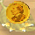 童話之父安徒生2005 / 04 / 02 當天是安徒生的 200 歲冥誕，跟吉恩村的說書人聽故事領取
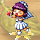 被愛戀的人2005 / 03 / 14 換男生送女生玩家玫瑰花，女生用花拿去換頭銜
被仰慕的人2005 西洋情人節活動頭銜，女生送男生玩家的濃情巧克力，拿去跟月下老人換得
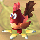 雞年快樂2005 新年活動頭銜，拜年換得
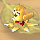 新年快樂2005 新年活動頭銜，收集春聯四個字『新年快樂』換得
聖誕雪人頭銜| 2004 聖誕節活動頭銜，打冒牌聖誕老公公，隨機得到聖誕禮物袋，集齊5個去找聖誕老公公即可換得
| 七夕情人頭銜2004 七夕活動頭銜 ( 站長因當兵未參與活動，不知是如何取得的 >_< )
歡樂萬聖節2004 萬聖節活動，收集 25 顆糖果跟彩虹城活動負責人換取
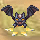 吸血伯爵2004 萬聖節活動找到 QQ 仙子選擇 " 我要成為眾人注目的焦點 " 即可取得
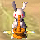 玉兔頭銜2004 中秋節活動打月兔取得任務物品跟彩虹城活動負責人換取
 嫦娥奔月2004 中秋節活動解完嫦娥的任務就可得到
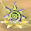 童話之友2004 / 08 / 28 參加高雄網聚領到的紀念品
童話之友2004 / 08 / 27 參加台中網聚領到的紀念品
童話之友2004 / 08 / 21 參加台北網聚領到的紀念品
郎情頭銜2004 情人節活動，開七夕情人禮隨機取得 ( 男 )
妾意頭銜2004 情人節活動，開七夕情人禮隨機取得 ( 女 )
七夕情人頭銜2004 情人節活動，收集三隻鳥類幻獸跟彩虹城狩獵大臣換取
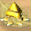 肉粽大王頭銜2004 端午節活動，收集好粽子及材料去跟彩虹城活動負責人換取
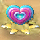 2004 完美情人2004 情人節活動，收到玩家巧克力前三名多的即可獲得
猴年行大運2004 新年活動，打年獸集滿 55 個年糕交給市鎮中心 NPC 即可獲得
X'mas聖誕節幫聖誕老人收集材料佈置聖誕樹積分達一千點即可獲得
保衛戰英雄舊活動村莊保衛戰累計積分在所有伺服器前十名即可獲得
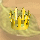 七夕情人舊活動七夕情人節得到情人巧克力數量最多的寶冠
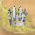 七夕情人| 舊活動七夕情人節得到情人巧克力數量第二名的寶冠
| | | | | | | | | | | | | | | | | | | | | | | | | | | | | | | | | | | | | | | | | | | | | | | | | | | | | | | | | | | | | | | | | | | | | | | | | |